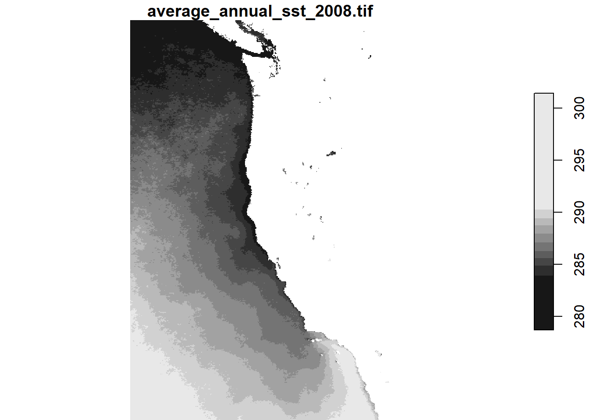
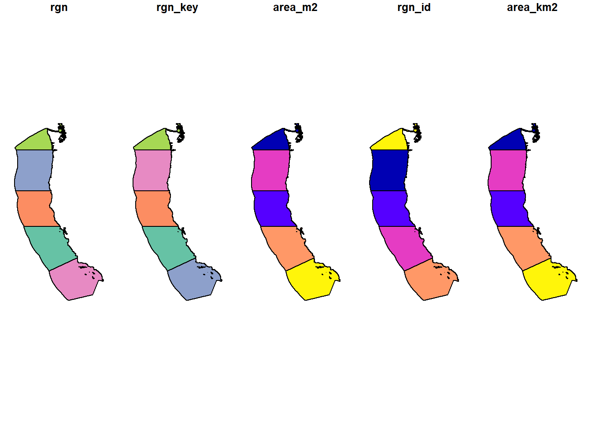
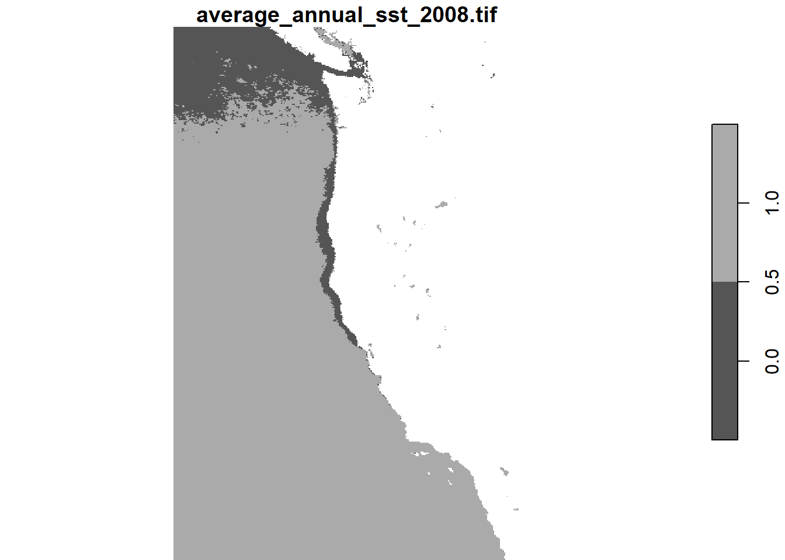
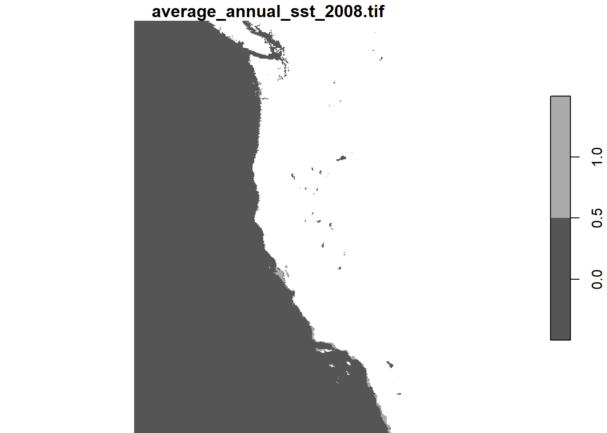
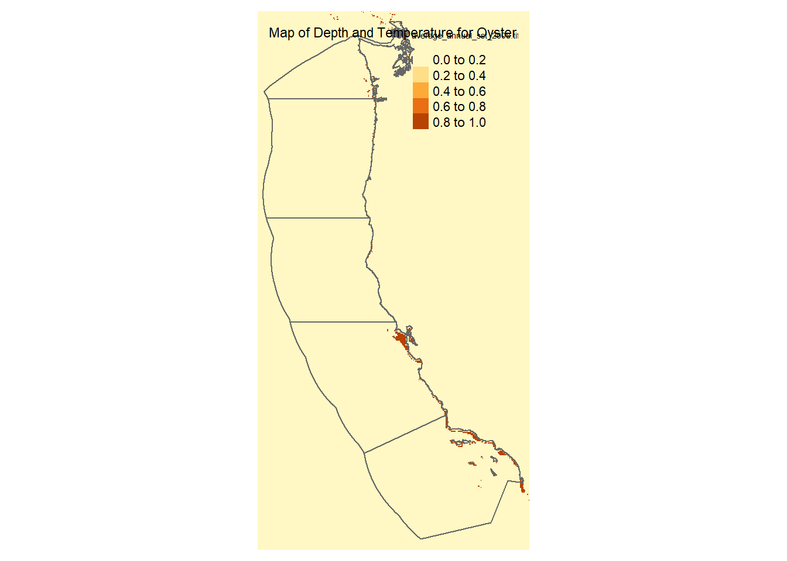
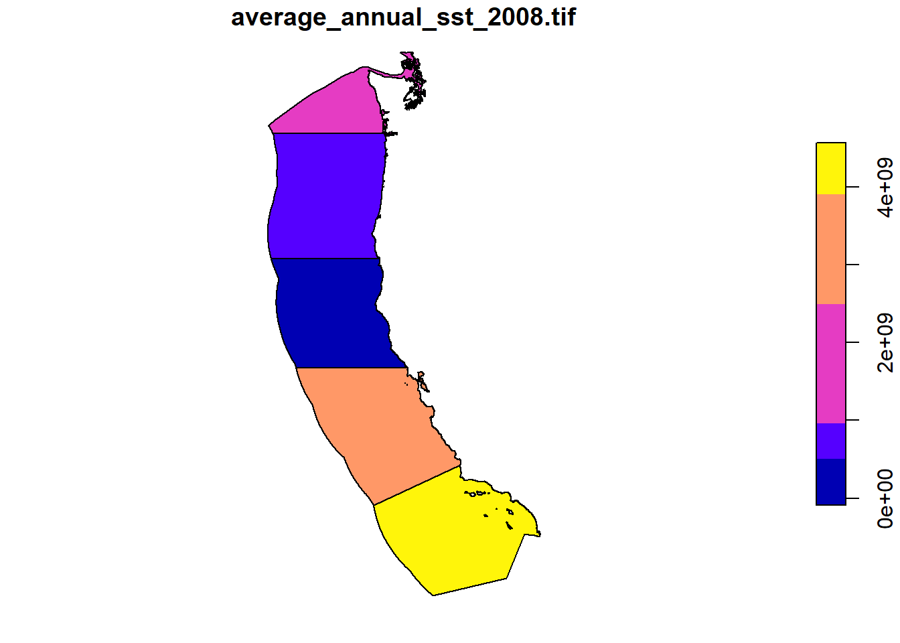
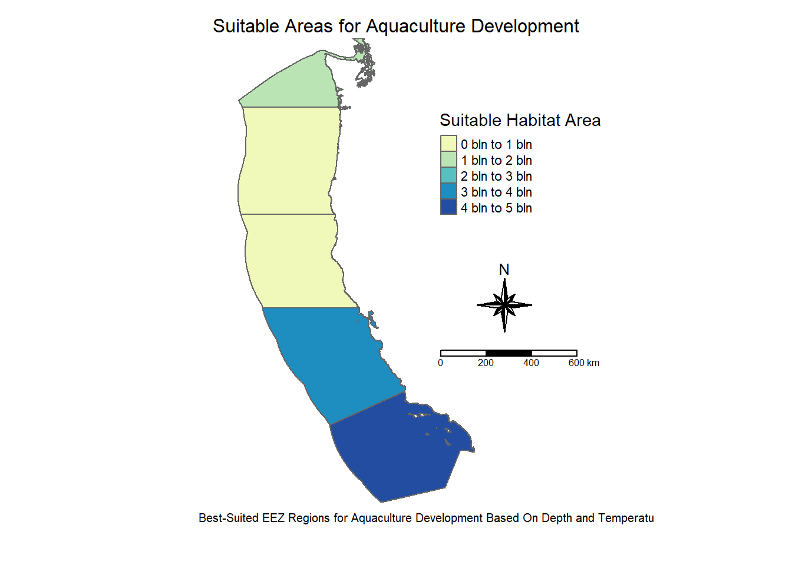
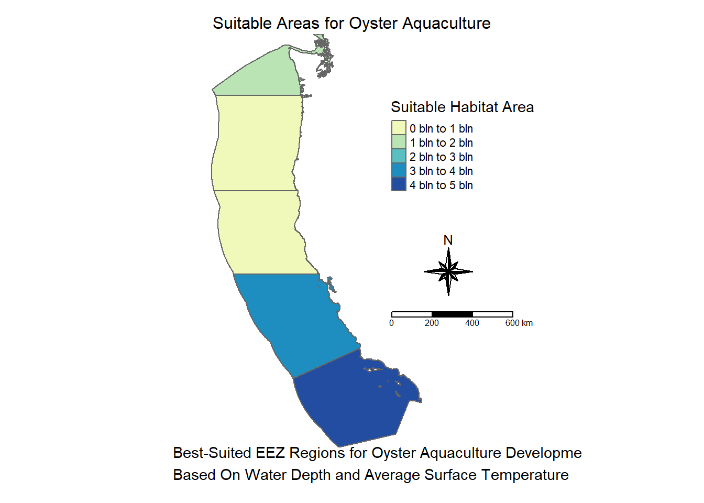
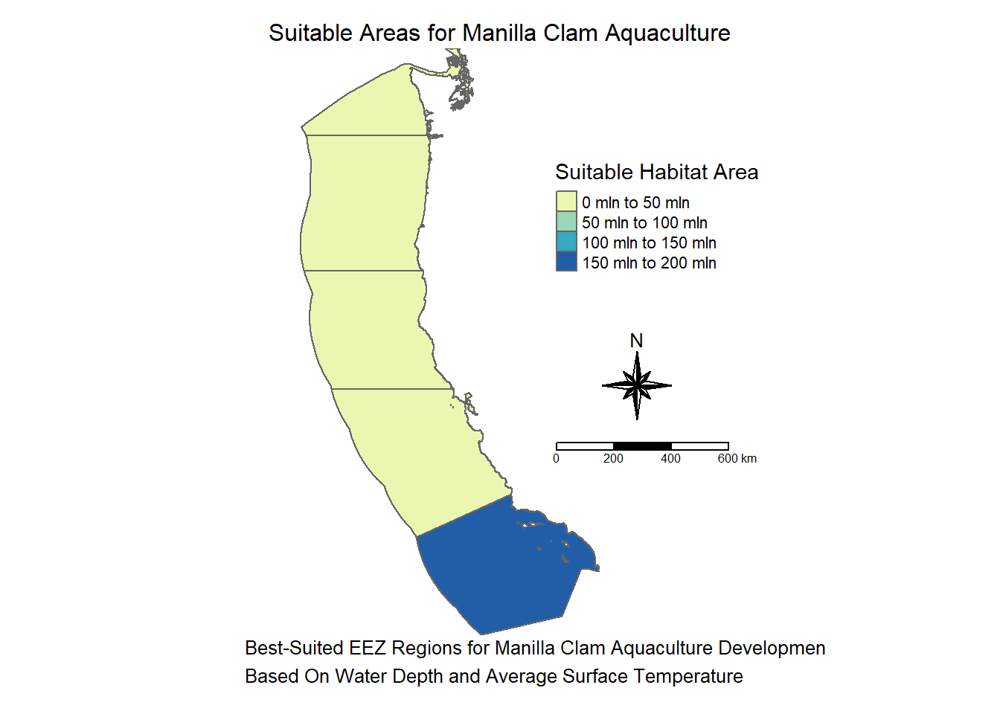

Code
# Load libraries
library(tidyverse)
library(here)
library(tmap)
library(ggplot2)
library(stars)
library(spDataLarge)
library(dplyr)
library(terra)The goal of this project is to have one single function that can take information about the depths a species can live in, the suitable temperature range for the species, and the species name, and produce a map of the West Coast showing which EEZ regions are ideal for aquaculture of that species. This function is going to be doing a lot, so from now on I will refer to it as the Mega Function™. Throughout this project, I will be giving an overview of how I accomplish this task and narrating along the way so hopefully whoever is reading this can make a similar function if you want to! I will be explaining what I am doing as I do it, and there will be code chunks if you want to follow along in the programming.
# Load libraries
library(tidyverse)
library(here)
library(tmap)
library(ggplot2)
library(stars)
library(spDataLarge)
library(dplyr)
library(terra)To start off this project I have some data I need to read in and process. This data includes .tif files with data about sea surface temperature (SST) from the years 2008-2012, bathymetry tif files of the ocean, and a shapefile with “exclusive economic zone” or EEZ data.
# Load data
# Read in NOAA Sea Surface Temperature files
sst_avg2008 <- read_stars(here("data", "average_annual_sst_2008.tif"))
sst_avg2009 <- read_stars(here("data", "average_annual_sst_2009.tif"))
sst_avg2010 <- read_stars(here("data", "average_annual_sst_2010.tif"))
sst_avg2011 <- read_stars(here("data", "average_annual_sst_2011.tif"))
sst_avg2012 <- read_stars(here("data", "average_annual_sst_2012.tif"))
# Read in Bathymetry files
depth <- read_stars(here("data", "depth.tif"))
# Load wc_regions shape file
wc_regions_clean <- st_read(here("data", "Wc_regions_clean.shp"))Whenever I begin a project, I like to make some quick plots and do some preliminary data exploration so I know what I am dealing with. Here are three raw plots:
# Plot bathymetry data
plot(depth)
# Plot the temperature data
plot(sst_avg2008)
# Plot wc_regions_clean
plot(wc_regions_clean)
Fabulous! Now I can move on to my next step.
The SST data comes in the form of 5 different rasters, one raster file for each year. I plan on working with average SST for this project so I want to be able to get the average temperatures for all the years. In order to do that, I will need to stack the raster so they can all neatly be one thing. The first step is to crop the rasters so they all have the same dimensions, we will talk more about cropping later. After they are cropped, I can stack them. I always like to plot data after stacking so I can make sure the stack is something I can actually use.
# Crop each SST raster (for 2009-2012) to match the bounding box of the 2008 SST raster
sst_avg2009 <- st_crop(sst_avg2009, st_bbox(sst_avg2008))
sst_avg2010 <- st_crop(sst_avg2010, st_bbox(sst_avg2008))
sst_avg2011 <- st_crop(sst_avg2011, st_bbox(sst_avg2008))
sst_avg2012 <- st_crop(sst_avg2012, st_bbox(sst_avg2008))# Combine the individual SST average rasters for the years 2008 to 2012 into a single stack
sst_avg_stack <- c(sst_avg2008, sst_avg2009, sst_avg2010, sst_avg2011, sst_avg2012)# Plot to view
plot(sst_avg_stack)
Now with the rasters stacked I can begin to process the data.
To best know which EEZ areas will be the most suitable for different species, I want to average the SST information over the years and base the temperature suitability off of that.
# Apply the 'mean' function over the entire stack of SST rasters (sst_avg_stack) across the "x" and "y" dimensions.
# This will calculate the mean SST value for each grid cell across all years in the stack.
sst_mean <- st_apply(sst_avg_stack, c("x", "y"), FUN = mean)
# Select a single attribute using dplyr::select
# This step isolates the specific SST attribute from the result of the 'st_apply' operation
sst_mean <- sst_mean %>% select("average_annual_sst_2008.tif")Here is what the plot looks like with just the mean.
# View plot
plot(sst_mean)
# The original temperature data is in Kelvin, but most people don't use Kelvin so I will change it to Celsius by # subtracting 273.5.
# Subtract 273.15 to convert to Celsius
celsius_mean_sst <- sst_mean - 273.15Next, we need to process the SST and depth data so that they can be combined. In this case the SST and depth data have slightly different resolutions, extents, and positions.
In basic terms, the raster’s extent is the box around the geographic area it covers. It wouldn’t be useful if the two maps covered completely separate areas. One of the easiest ways to fix mismatch extents is to create a bounding box. A bounding box will make it so only the data within a certain geographical region will be used. For this, I will take the dataset with the larger extent and crop it to match the extent of the other dataset.
# Crop the depth data to the mean_sst_celsius data
cropped_depth <- st_crop(depth, st_bbox(celsius_mean_sst))When working with maps resolution is basically how detailed the image is. Making sure the resolution between our maps is the same is important. If we don’t pay attention to resolution we can get maps that look weird and are inaccurate. It’s like photoshopping a very pixelated image onto a very clear image, it looks weird and we can tell it’s wrong. Because this project is about the Mega Function™, I am going to use a smaller function to check the resolutions.
# Function to check if the resolutions (dimensions) of two spatial data objects match
check_res_fun <- function(d1, d2) {
if (identical(st_dimensions(d1), st_dimensions(d2))) {
return(print("Resolutions match!"))
} else {
return(print("Resolutions do not match"))
}
}# Use the function to check the resolutions
check_res_fun(cropped_depth, celsius_mean_sst)[1] "Resolutions do not match"I can see that are resolutions do not match, so I must make them match myself.
# Resample the depth data to the mean_sst_celsius data using the near method
resampled_depth <- st_warp(cropped_depth, celsius_mean_sst, method = "near")
# Check if the resolutions match now
check_res_fun(resampled_depth, celsius_mean_sst)[1] "Resolutions match!"Now the resolutions match.
# Crop the 'resampled_depth' raster to the bounding box of the 'celsius_mean_sst' raster
cropped_depth <- st_crop(resampled_depth, st_bbox(celsius_mean_sst))# Here I am re-assigning names to avoid confusion later on in the code
# Re-assign variables
depth_clean <- cropped_depth
sst_clean <- celsius_mean_sstOne thing I have learned is that mismatching CRSs is one of the things that will derail me the most when I am trying to work with geographical data sets. Lots of weird things can happen when coding and I think in projects like these about 90% of those things are caused by CRS troubles. To prevent these troubles, I will write a function that will tell me if data sets have mismatching CRSs
# Function to check if the CRSs of two spatial data objects match
check_crs_fun <- function(d1, d2) {
if (identical(st_crs(d1), st_crs(d2))) {
return(print("CRSs match!"))
} else {
return(print("CRSs do not match"))
}
}Then we can check our data sets:
# Use function to check is CRSs match
check_crs_fun(depth_clean, sst_clean)[1] "CRSs match!"check_crs_fun(depth_clean, wc_regions_clean)[1] "CRSs do not match"check_crs_fun(wc_regions_clean, sst_clean)[1] "CRSs do not match"Here I can see that two of my CRSs do not match.
The next step will be to change the CRSs so they are consistent. I will do this by creating a function that will change the CRS of the first inputted dataset to match the CRS of the second inputted dataset.
# Function to check if the CRS of two spatial data objects match and transform the first dataset's CRS if necessary
change_crs_fun <- function(df1, df2) {
if (identical(st_crs(df1), st_crs(df2))) {
print("No change needed")
return(df1)
} else {
df1 <- st_transform(df1, st_crs(df2))
print("changed first dataset's CRS to match the second dataset's CRS")
return(df1)
}
}# Change the CRSs of depth_clean and wc_regions_clean to match sst_clean and store in new variables
depth_clean <- change_crs_fun(depth_clean, sst_clean)[1] "No change needed"wc_regions_clean <- change_crs_fun(wc_regions_clean, sst_clean)[1] "changed first dataset's CRS to match the second dataset's CRS"# Check if the CRSs of depth_clean and wc_regions_clean match sst_clean
check_crs_fun(depth_clean, sst_clean)[1] "CRSs match!"check_crs_fun(wc_regions_clean, sst_clean)[1] "CRSs match!"# Create CRS warning function to check if dataset CRS matches EPSG:9122
crs_warning <- function(df) {
if (st_crs(df) != st_crs(sst_avg2008)) {
warning("Warning: The CRS of the dataset is not EPSG:9122!")
} else {
message("The CRS is EPSG:9122.")
}
}All of our CRSs should be the same now.
So far, I am three functions deep and counting.
The goal of this project is to have one single function that can take information about the depths a species can live in, the suitable temperature range for the species, and the species name, and produce a map of the West Coast showing which EEZ regions are ideal for aquaculture of that species. Instead of trying to write the function all at once, I’ll be doing each step in parts and putting them all together at the end. I will be using information about Oysters to begin with, which thrive at SSTs between 11°C–30°C and depths of 0–70 meters below sea level.
My strategy here is to input minimum and maximum values for potential depths and temperatures, then assign areas within the desired range a value of 1 and areas outside the range a value of 0. I’m going to handle SST and depth individually, then multiply the results together. Then I can just plot the areas with 1s to show where the habitat is.
# Reclassify Sea Surface Temperature (SST) to identify suitable areas based on temperature range
# Suitable SST range: 11°C to 30°C
suitable_sst <- (sst_clean >= 11 & sst_clean <= 30)
# Convert logical values (TRUE/FALSE) to integers (1/0) to create a binary map of suitable areas
# Preserve the 'stars' format while applying the conversion
suitable_sst <- st_apply(suitable_sst, c("x", "y"), function(x) as.integer(x))
# Plot the reclassified SST map
plot(suitable_sst)
# Reclassify Depth to identify suitable areas based on depth range
# Suitable Depth range: -24m to 0m (depths above sea level)
suitable_depth <- (depth_clean >= -70 & depth_clean <= 0)
# Convert logical values (TRUE/FALSE) to integers (1/0) to create a binary map of suitable areas
# Preserve the 'stars' format while applying the conversion
suitable_depth <- st_apply(suitable_depth, c("x", "y"), function(x) as.integer(x))
# Plot the reclassified Depth map
plot(suitable_depth)
# Combine SST and Depth suitability maps by multiplying them
# The result will be a binary map indicating areas that are suitable for both SST and Depth
suitable_locations <- suitable_sst * suitable_depth
plot(suitable_locations)
Based on those not-polished at all preliminary plots, I feel confident that that method will work. Now I will make a function that plots suitable depths and SSTs. Adding a species name into the title of the plot isn’t super difficult, so I will just throw that in there too. Then I will input suitable depth and SST for oysters.
# Define function to create a map based on depth and temperature ranges for a given species
first_map_fun <- function(min_temp, max_temp, min_depth, max_depth, species_name) {
# Step 1: Reclassify Depth (keep logical 1/0 format)
# Create a logical matrix where TRUE (1) represents areas within the depth range
depth_range <- (depth_clean >= min_depth & depth_clean <= max_depth)
# Step 2: Convert logical values (TRUE/FALSE) to integers (1/0)
# Apply the transformation to keep the 'stars' format
depth_range <- st_apply(depth_range, c("x", "y"), function(x) as.integer(x))
# Replace NA values in depth range with 0
depth_range[is.na(depth_range)] <- 0
# Step 3: Reclassify Sea Surface Temperature (SST) (keep logical 1/0 format)
# Create a logical matrix where TRUE (1) represents areas within the temperature range
sst_range <- (sst_clean >= min_temp & sst_clean <= max_temp)
# Convert logical values (TRUE/FALSE) to integers (1/0) and preserve the 'stars' format
sst_range <- st_apply(sst_range, c("x", "y"), function(x) as.integer(x))
# Replace NA values in SST range with 0
sst_range[is.na(sst_range)] <- 0
# Step 4: Combine SST and Depth ranges to create a 'suitable' area map
# A value of 1 means both depth and temperature are suitable for the species
combo_range <- sst_range * depth_range
# Replace NA values in the combined range with 0
combo_range[is.na(combo_range)] <- 0
# Step 5: Convert the suitable area map to a 'stars' object for mapping
combo_range <- st_as_stars(combo_range)
# Step 6: Create the map using 'tmap'
area_map <- tm_shape(wc_regions_clean) +
tm_polygons() + # Add region polygons
tm_shape(combo_range) +
tm_raster() + # Add the suitable area raster
tm_shape(wc_regions_clean) +
tm_borders() + # Add borders around regions
tm_layout(
title = paste("Map of Depth and Temperature for", species_name), # Title of the map
main.title.size = 1, # Adjust title size
panel.show = FALSE, # Hide the panel grid
frame = FALSE # Hide the frame around the map
)
# Step 7: Print the map
print(area_map)
}# Use function
first_map_fun(11, 30, -70, 0, "Oyster")
It looks like it worked! It is a very ugly map, but it shows us the function functions. I can see there are some areas, mostly along the lower part of the coast, that would be suitable for Oysters.
I would like it to color each EEZ area by which area has the most amount of suitable area in it.
Since I’ve already turned the suitable depth and temperature ranges into 1s and 0s, I think I can find the region with the most suitable habitat by summing the 1s in each region. The region with the highest number will have the most suitable habitat. Here’s what I need to do to accomplish this:
# Step 1: Rasterize the wc_regions_clean shapefile to match the suitable_locations raster
region_raster <- st_rasterize(wc_regions_clean, suitable_locations, field = "rgn", fun = "first")
# Step 2: Multiply suitable_locations raster by the region_raster
suitable_by_region <- suitable_locations * region_raster
# Step 3: Sum values within each region
region_sums <- st_extract(suitable_by_region, wc_regions_clean, fun = sum, na.rm = TRUE)
# Step 4: Test plot
plot(region_sums)
Based on the plot, it looks like this method will work. Since I’ll be using the same shapefile, I don’t feel the need to turn this into a separate function for testing, so I’ll move to the next step.
Constantly re-running a function to test map aesthetics would take a long time, so instead, I’m making the map here and will incorporate it into the final function later.
tm_shape(wc_regions_clean) +
tm_polygons() + # Visualize the boundaries of the EEZ regions
tm_shape(region_sums) +
tm_fill(palette = "YlGnBu", title = "Suitable Habitat Area") + # Add color representing habitat suitability
tm_borders() + # Overlay region borders for clarity
tm_compass(position = c(0.64, 0.43), type = "8star", size = 3) + # Add a compass to indicate direction
tm_scale_bar(position = c(0.58, 0.35)) + # Include a scale bar for distance reference
tm_layout(
main.title = "Suitable Areas for Aquaculture Development", # Set the map title
asp = 1,
main.title.size = 1,
panel.show = FALSE,
frame = FALSE,
inner.margins = c(0.1, 0.1, 0, 0.3),
main.title.position = c("center", "top"),
legend.position = c(0.58, 0.65)
) +
tm_credits(
text = "Best-Suited EEZ Regions for Aquaculture Development Based On Depth and Temperature",
position = c(0.1, 0.05), size = 1, align = "center" # Display credits at the bottom
)
I like the way this map looks, and I think any little issues can be fixed when we put the function together.
# Function to create a map showing suitable habitat for a species based on temperature and depth criteria
area_map_fun <- function(min_temp, max_temp, min_depth, max_depth, species_name) {
# Step 1: Reclassify Depth (logical 1/0 based on specified range)
# Create a logical raster (TRUE/FALSE) where depths are within the specified range
depth_range <- (depth_clean >= min_depth & depth_clean <= max_depth)
# Convert logical values (TRUE/FALSE) to integers (1/0) using 'st_apply'
depth_range <- st_apply(depth_range, c("x", "y"), function(x) as.integer(x))
# Set any NA values to 0 (indicating unsuitable depth)
depth_range[is.na(depth_range)] <- 0
# Step 2: Reclassify Sea Surface Temperature (SST) (logical 1/0 based on specified range)
# Create a logical raster (TRUE/FALSE) where SST is within the specified range
sst_range <- (sst_clean >= min_temp & sst_clean <= max_temp)
# Convert logical values (TRUE/FALSE) to integers (1/0) and preserve stars format
sst_range <- st_apply(sst_range, c("x", "y"), function(x) as.integer(x))
# Set any NA values to 0 (indicating unsuitable temperature)
sst_range[is.na(sst_range)] <- 0
# Step 3: Combine SST and Depth Ranges
# Create a combined suitability raster where both depth and SST conditions are met
combo_range <- sst_range * depth_range
# Set any NA values in the combined raster to 0
combo_range[is.na(combo_range)] <- 0
# Convert the suitable area into a 'stars' object
combo_range <- st_as_stars(combo_range)
# Step 4: Rasterize the region shapefile (wc_regions_clean) to match the suitable area raster
# Rasterize the region shapefile based on the "rgn" field, aligning it with the suitable area raster
region_raster <- st_rasterize(wc_regions_clean, combo_range, field = "rgn", fun = "first")
# Step 5: Multiply the suitable area raster by the region raster to isolate suitable regions
suitable_test <- combo_range * region_raster
# Step 6: Calculate the sum of suitable areas within each region (sum of 1s)
region_sums <- st_extract(suitable_test, wc_regions_clean, fun = sum, na.rm = TRUE)
# Step 7: Create the heatmap using the suitable region sums
area_map <- tm_shape(wc_regions_clean) +
tm_polygons() + # Draw region boundaries
tm_shape(region_sums) + # Add region sums (suitable habitat area)
tm_fill(palette = "YlGnBu", title = "Suitable Habitat Area") + # Color the regions by suitable habitat area
tm_borders() + # Add borders around the regions
tm_compass(position = c(0.64, 0.43), type = "8star", size = 3) + # Add compass
tm_scale_bar(position = c(0.58, 0.35)) + # Add scale bar
tm_layout(
main.title = paste("Suitable Areas for", species_name, "Aquaculture"),
asp = 1,
main.title.size = 1,
panel.show = FALSE,
frame = FALSE,
inner.margins = c(0.1, 0.1, 0, 0.3),
main.title.position = c("center", "top"),
legend.position = c(0.58, 0.65)
) +
tm_credits(
text = paste("Best-Suited EEZ Regions for", species_name,
"Aquaculture Development\nBased On Water Depth and Average Surface Temperature"),
position = c(0.1, 0.01),
size = 1,
align = "left"
)
# Step 8: Print the map
print(area_map)
}area_map_fun(11, 30, -70, 0, "Oyster")
And thats the final function!
Now we can use it for any aquaculture-relevant species, so I will use it on the Manila Clam (Ruditapes philippinarum)! According to sealifebase.ca, Manilla clams prefer temperatures of 18°C - 35°C and depths of 0 - 100 meters. So I will put that info in my function and a map will appear!
area_map_fun(18, 35, -100, 0, "Manilla Clam")
The map appeared!
We can see from the map that the region with the most suitable habitat is in the very southern part of the coast, which isn’t surprising given its preference for high temperatures.
Hopefully, after reading this, you have some idea of how to create a similar mega function yourself! Thanks for reading!
Flanders Marine Institute (VLIZ). (n.d.). Exclusive Economic Zone (EEZ) boundaries. Maritime Boundaries Database, version unknown. Retrieved from https://www.marineregions.org/eez.php (Accessed: November 29, 2024)
General Bathymetric Chart of the Oceans (GEBCO) Compilation Group. (2022). GEBCO_2022 Grid [Data set]. https://doi.org/10.5285/e0f0bb80-ab44-2739-e053-6c86abc0289c (Accessed: November 29, 2024)
National Oceanic and Atmospheric Administration (NOAA). (2018). Daily Global 5km Satellite Sea Surface Temperature Anomaly (Version 3.1). NOAA Coral Reef Watch. Retrieved from https://coralreefwatch.noaa.gov/product/5km/index_5km_ssta.php (Accessed: November 29, 2024)
SeaLifeBase. (n.d.). Ruditapes philippinarum (Adams & Reeve, 1850): Japanese carpet shell. Retrieved November 30, 2024, from https://www.sealifebase.ca/summary/Ruditapes-philippinarum.html